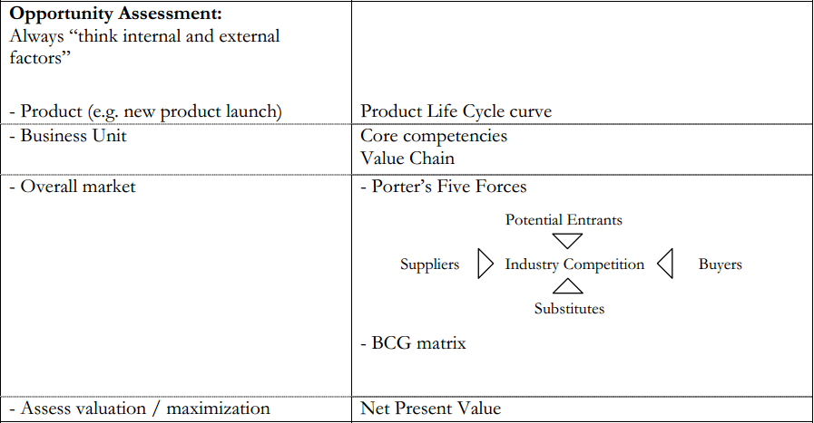
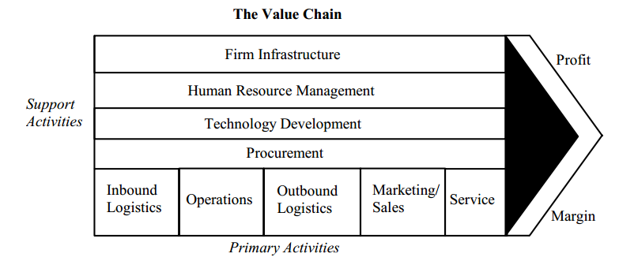

(Updating) Consulting Cases - Product Differentiation
This post is continuously updated every time I read a case book/consulting book. It contains all cases with product differentiation/product strategy related problem.
Always think internal and external factor
Related Terms and Frameworks

Core Competence
Value Chain

Usage
- Identify components of costs.
- Identify components of profits.
- Relate activities and core competencies.
Definition
PRIMARY ACTIVITIES
-
Inbound Logistics: Receiving, storing, materials handling, warehousing, inventory control, vehicle scheduling and returns to suppliers. -
Operations: Transforming inputs into final product form (e.g. machining, packaging, assembly, equipment maintenance, testing, printing and facility operations). -
Outbound Logistics: Distributing the finished product (e.g. finished goods warehousing, material handling, delivery vehicle operation, order processing and scheduling). -
Marketing and Sales: Induce and facilitate buyer to purchase the product (e.g. advertising, sales force, quoting, channel election, channel relations and pricing). -
Service: Maintain or enhance value of product after sale (e.g. installation, repair, training, parts supply, and product adjustment).
SUPPORT ACTIVITIES
-
Procurement: Purchasing of raw materials, supplies, and other consumable items as well as assets. -
Technology Development: Know-how, procedures, and technological inputs needed in every value chain activity. -
Human Resources Management: Selection, promotion, placement, appraisal, rewards, management development and labor/employee relations. -
Firm Infrastructure: General management, planning, finance, accounting, legal, government affairs, and quality management.
3Cs
Use for business strategy and new market opportunity
Customer
Individual
- Who is the customer?
- Perceptions
- Loyalty
- Volume
- Switching costs
- Profitability of customer
- Preference
- Purchase Behavior
- Usage
Market
- Size
- Growth
- Segmentation
- Shares
- Maturity
- Trends
Product
- Price
- Differentiation
- Life Cycle
- Technology
- Substitutes
Company
Economics
- Costs
- Profitability
- Capacity to develop product
- Capacity to produce product
- Break-even analysis
- Experience curve
- Financial
- Channels
- Organization/structure
- Intangibles
Fit
- Strategy and vision
- Strengths/weaknesses
- Culture
- Resources
- Organizational Structure
- Brand equity
- Core competencies
Competition
5 forces- Size, # of competitors, market shares
- Competitors’ responses
- Current strategy
- Strategic value of product and commitment to product
- Corporate goals
- Capabilities
- Economies of scale/scope
- Cost structure
- Experience curve
- Resources: financial, channels, organization, intangibles (brand loyalty, culture)
- Relative product positioning
- Substitutes
- Expected response to competitive moves
Cases
Berkeley Haas Consulting Club Case Book 2010 #5.4
Case Scenario
The client is a provider of wealth advisory services to high-net-worth individuals.
Typical wealth advisory services include: investment strategy and portfolio management, estate and trust planning, tax planning and preparation, insurance planning, family office services (e.g., bill payment services) and the like. The client started out as a professional services specialist to corporate clients, but over time, has successfully expanded into individual wealth advisory services. Over time, the revenues generated from the wealth advisory services component of the company grew to over $400M worldwide.
Traditional players in this market are high-end private banks (e.g., JP Morgan), and boutique financial planners. These players do not offer their own products, but typically have close partnerships or affiliations with those who do (e.g., mutual fund companies, insurance companies and brokerage houses).
Within the last 12 months, several disruptive events have occurred in the marketplace. Large and diversified financial services players are launching aggressive national marketing campaigns around their wealth advisory services businesses, and the results are paying off as they begin to capture an alarming share of the market in a short period of time.
In addition, a new, completely different type of competitor has announced its presence and intent to enter the wealth advisory services market, offering a value proposition very similar to the client’s. This new concern is well funded, and has some of the most successful venture capitalists of the day filling the seats on its board of directors.
This new competitor is also causing significant problems for the client; within the past 3 months, the top five producing partners have left to join this firm, taking their clients with them, and leaving the client’s geographic presence in a strategically critical growth area significantly weakened.
In addition, the client is finding that its revenues are decreasing significantly in certain types wealth advisory services they offer.
The client has retained the services of Deloitte Consulting to help them understand what their strategic response options are, and to recommend the best course of action to follow.
Comments
Comments powered by Disqus